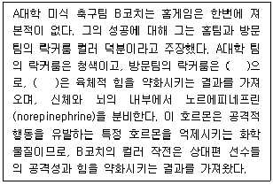
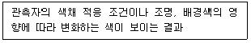
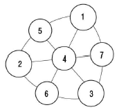

컬러리스트산업기사 (2020-08-22 기출문제)
1과목: 색채심리
1. 사회문화정보로서 색이 활용된 예로 프로야구단의 상징색은 어떤 역할에 가장 크게 기여하였는가?
- 국제적 표준색의 기능
- 사용자의 편의성
- 유대감의 형성과 감정의 고조
- 차별적인 연상효과
(정답률: 79%)

2. 색채 조절에 대한 내용으로 적합하지 않은 것은?
- 색채의 심리적 효과에 활용된다.
- 색채의 생리적 효과에 활용된다.
- 개인적인 선호에 의해 건물, 설비, 집기 등에 색을 사용한다.
- 안전하고 효율적인 작업환경과 쾌적한 생활환경의 조성을 목적으로 한다.
(정답률: 74%)
3. 지역과 일반적인 지역색의 연결이 틀린 것은?
- 베니스의 태양광선이 많은 곳으로 밝고 다채로운 색채의 건물이 많다.
- 토론토는 호숫가의 도시이므로 고명도의 건물이 많다.
- 도쿄는 차분하고 정적인 무채색의 건물이 많다.
- 뉴욕의 마천루는 고명도의 가벼운 색채 건물이 많다.
(정답률: 62%)
4. 색채와 자연 환경과의 관계에 대한 설명으로 틀린 것은?
- 지역색은 한 지역의 정체성을 대변하는 색채로 볼 수 있다.
- 지역성을 중시하여 소재와 색채를 장식적인 것으로 한다.
- 특정 지역의 기후, 풍토에 맞는 자연 소재가 사용되어야 한다.
- 기온과 일조량의 차이에 따라 톤의 이미지가 변하므로 나라마다 선호하는 색이 다르다.
(정답률: 71%)
5. 색채와 다른 감각과의 교류현상은?
- 색채의 공감각
- 색채의 항상성
- 색채의 연상
- 시각적 언어
(정답률: 62%)
6. 문화의 발달 순서로 볼 때 가장 늦게 형성된 색명은?
- 흰색
- 파랑
- 주황
- 초록
(정답률: 65%)
7. 모든 색채 중에서 촉진 작용이 가장 활발하여 시감도와 명시도가 높아 기억이 잘 되는 색채는?
- 파랑
- 노랑
- 빨강
- 초록
(정답률: 60%)
8. 색채의 연상과 관련한 설명으로 틀린 것은?
- 연상은 개인적인 경험, 기억, 사상, 의견 등이 색으로 투영되는 것이다.
- 원색보다는 연한 톤이 될수록 부드럽고 순수한 이미지를 갖는다.
- 제품의 색 선정 시 정착된 연상으로 특징적 의미를 고려하면 좋다.
- 무채색은 구체적 연상이 나타나기 쉽다.
(정답률: 83%)
9. 색채계획 시 면적대비 효과를 가장 최우선으로 고려해야 하는 경우는?
- 전통놀이 마당 광고 포스터
- 가전제품 중 냉장고
- 여성의 수영복
- 올림픽 스타디움 외관
(정답률: 71%)
10. 색채 정보를 수집하기 위한 일반적인 방법이 아닌 것은?
- 패널 조사법
- 실험 연구법
- 조사 연구법
- DM 발송법
(정답률: 68%)
11. 우리나라 국기인 태극기에 색채의의미와 상징이 아닌 것은?
- 빨강 – 존귀와 양
- 파랑 – 희망과 음
- 흰색 – 평화와 순수
- 검정 – 방위
(정답률: 63%)
12. 노랑이 장애물이나 위험물의 경고에 많이 사용되는 이유가 아닌 것은?
- 국제적으로 쉽게 이해한다.
- 명시도가 높다.
- 사용자의 편의성을 높인다.
- 메시지 전달이 용이하다.
(정답률: 72%)
13. 회사 간의 경쟁으로 인해 가격, 광고, 유치 경쟁이 치열하게 일어나는 제품 수명 주기 단계는?
- 도입기
- 성장기
- 성숙기
- 쇠퇴기
(정답률: 49%)
14. 각 지역의 색채 기호에 관한 내용 중 옳은 것은?
- 중국에서는 청색이 행운과 행복 존엄을 의미한다.
- 이슬람교도들은 초록을 종교적인 색채로 좋아한다.
- 아프리카 토착민들은 강렬한 난색만을 좋아한다.
- 북유럽에서는 난색계의 연한 색상을 좋아한다.
(정답률: 60%)
15. 마케팅의 개념의 변천 단계에 옳은 것은?
- 제품지향 → 생산지향 → 판매지향 → 소비자지향 → 사회지향
- 제품지향 → 판매지향 → 생산지향 → 소비자지향 → 사회지향
- 생산지향 → 제품지향 → 판매지향 → 소비자지향 → 사회지향
- 판매지향 → 생산지향 → 제품지향 → 소비자지향 → 사회지향
(정답률: 43%)
16. 다음 ( )안에 해당하는 적합한 색채는?

- 분홍색
- 파란색
- 초록색
- 연두색
(정답률: 62%)
17. 문화와 국기의 상징 색채로 올바르게 짝지어진 것은?
- 일본 – 주황색
- 중국 – 노란색
- 네덜란드 – 파란색
- 영국 – 군청색
(정답률: 64%)
18. 마케팅의 구성 요소 중 4C 개념으로 알맞지 않은 것은?
- 색채(Color)
- 소비자(Consumer)
- 편의성(Convenience)
- 의사소통(Communication)
(정답률: 63%)
19. 색과 형태의 연구에서 원을 의미하는 설명으로 옳은 것은?
- 우리나라 방위의 표시로 남쪽을 상징하는 색이다.
- 4, 5세의여자아이들이 선호하는 색채이다.
- 충동적인 감정을 일으키는 색채이다.
- 이상, 진리, 젊음, 냉정 등의 연상 언어를 가진다.
(정답률: 67%)
20. 색채와 신체 기능의 치료에 대한 설명이 틀린 것은?
- 류머티즘은 노란색을 통하여 효과를 볼 수 있다.
- 파란색은 호흡수를 감소시켜주며 근육 긴장을 이완시켜 준다.
- 파란색은 진정 효과가 있다.
- 노란색은 스트레스를 완화시켜준다.
(정답률: 63%)
2과목: 색채디자인
21. 인간의 시지각 원리에 근거를 둔 추상적, 기계적인 형태의 반복과 연속등을 통한 시각적 환영, 지각, 그리고 색채의 물리적 및 심리적 효과와 관련된 디자인 사조는?
- 미니멀 아트(Minimal Art)
- 팝아트(Pop Art)
- 옵아트(Op Art)
- 포스트 모더니즘(Post Modernism)
(정답률: 64%)
22. 디자인 편집의 레이아웃(layout)에 대한 설명 중 틀린 것은?
- 사진과 그림이 문자보다 강조되어야 한다.
- 시각적 소재를 효과적으로 구성, 배치하는 것이다.
- 전체적으로 통일과 조화를 고려해야 한다.
- 가독성이 있어야 한다.
(정답률: 70%)
23. 아르누보 양식에서 가장 독창적이고 화려한 장식을 사용한 스페인의 건축가는?
- 미스 반 데 로에 (Mies van der Rohe)
- 안토니오 가우디 (Antoni Gaudi)
- 루이스 칸 (Louis Isadore Kahn)
- 프랭크 로이드 라이트 (Frank Lloyd Wright)
(정답률: 67%)
24. 제품디자인 과정이 바르게 나열된 것은?
- 계획 → 조사 → 종합 → 분석 → 평가
- 조사 → 계획 → 분석 → 종합 → 평가
- 계획 → 조사 → 분석 → 평가 → 종합
- 계획 → 조사 → 분석 → 종합 → 평가
(정답률: 54%)
25. 디자인 역사에 대한 설명 중 옳은 것은?
- 구석기 시대에는 대개 주술적 또는 종교적 목적의 디자인이라 아름다움과 실용성을 더욱 강조했다.
- 18세기 영국에서 일어난 산업혁명은 예술혁명이자 공예혁명인 동시에 디자인혁명이었다.
- 중세 말 아시아에서 도시경제가 번영하게 되자 자연과 인간에 대한 사고방식이 바뀌었는데, 이를 고전문예의 부흥이라는 의미에서 르네상스라 불렀다.
- 크리스트교를 중심으로 한 중세 유럽문화는 인간성에 대한 이해나 개성의 창조력은 뒤떨어졌다.
(정답률: 43%)
26. 우수한 미적기준을 표준화하여 대량생산하고 질을 향상시켜 디자인의 근대화를 추구한 사조는?
- 미술공예 운동
- 아르누보
- 독일공작연맹
- 다다이즘
(정답률: 52%)
27. 지나치게 활동적이고 산만한 어린이를 보다 침착한 성격으로 고쳐주고자 할 때 중심이 되는 색상으로 적합한 것은?
- 파랑
- 빨강
- 갈색
- 검정
(정답률: 70%)
28. 디자인의 조건 중 시대와 유행에 따라 다르며 국가와 민족, 사회, 개성과 관련된 것은?
- 합목적성
- 경제성
- 심미성
- 질서성
(정답률: 44%)
29. 감성 디자인 적용 예시로 가장 적절하지 않은 것은?
- 원목을 전자기기에 적용한 스피커 디자인
- 1인 여성가구의 취향을 고려한 핑크색 세탁기
- 사용한 현수막을 재활용하여 만든 숄더백 디자인
- 시간에 따라 낮과 밤을 이미지로 보여주는 손목시계
(정답률: 60%)
30. 분야별 디자인에 관한 설명으로 틀린 것은?
- 스트리트퍼니처 디자인 – 버스정류장, 식수대 등 도시의 표정을 결정하는 중요한 역할을 한다.
- 옥외광고 디자인 – 기능적인 성격이 강하므로 심미적인 기능보다는 눈에 띄는 것이 가장 중요하다.
- 슈퍼그래픽 디자인 – 통상적인 개념을 벗어나 매우 커다란 크기와 다양한 형태의 조형예술, 비교적 단기간 내에 개선이 가능하다.
- 환경조형물 디자인 - 공익 목적으로 설치된 조형물로 주변 환경과의 조화, 이용자의 미적 욕구 충족이 요구된다.
(정답률: 47%)
31. 색채계획 과정에서 제품 개발의 스케치, 목업(mock-up)과 같이 디자인 의도가 제시되는 단계는?
- 환경분석
- 프레젠테이션
- 도면 제작
- 이미지 콘셉트 설정
(정답률: 45%)
32. 사용자의 필요성에 의해 디자인을 생각해내고, 재료나 제작방법 등을 생각하여 시각화하는 과정은?
- 재료과정
- 조형과정
- 분석과정
- 기술과정
(정답률: 55%)
33. 식욕을 촉진하는 음식점 색채계획으로 가장 적합한 것은?
- 회색 계열
- 주황색 계열
- 파란색 계열
- 초록색 계열
(정답률: 75%)
34. 상품을 선전하고 판매하기 위해 판매현장에서 사용되는 디자인 형태는?
- POP 디자인
- 픽토그램
- 에디토리얼 디자인
- DM 디자인
(정답률: 65%)
35. 기능에 최대한 충실했을 때 디자인 형태가 가장 아름다워진다는 사상은?
- 경험주의
- 자연주의
- 기능주의
- 심미주의
(정답률: 71%)
36. 일반적인 색채 계획의 과정으로 옳은 것은?
- 색채환경 분석 → 색채의 목적 → 색채심리조사 분석 → 색채전달계획 작성 → 디자인 적용
- 색채심리조사 분석 → 색채의 목적 → 색채환경 분석 → 색채전달계획 작성 → 디자인 적용
- 색채의 목적 → 색채환경 분석 → 색채심리조사 분석 → 색채전달계획 작성 → 디자인 적용
- 색채환경 분석 → 색채심리조사 분석 → 색채의 목적 → 색채전달계획 작성 → 디자인 적용
(정답률: 46%)
37. 도시환경디자인에서 거리시설물(street furniture)에 해당되지 않는 것은?
- 교통 표지판
- 공중전화
- 쓰레기통
- 주택
(정답률: 69%)
38. 디자인의 조형요소 중 형태의 분류와 거리가 먼 것은?
- 유동적 형태
- 이념적 형태
- 자연적 형태
- 인공적 형태
(정답률: 31%)
39. 제품디자인을 공예디자인과 구분 짓는 가장 중요한 요인으로 옳은 것은?
- 복합재료의 사용
- 대량생산
- 판매가격
- 제작기간
(정답률: 68%)
40. CIP의 기본 시스템(Basic System) 요소로 틀린 것은?
- 심벌마크 (symbol mark)
- 로고타입(logotype)
- 시그니처(signature)
- 패키지(package)
(정답률: 62%)
3과목: 섹채관리
41. 염료에 대한 설명으로 옳은 것은?
- 가는 분말형태로 매질에 고착된다.
- 페인트, 잉크, 플라스틱 등에 섞어 사용한다.
- 불투명한 색상을 띤다.
- 물에 녹는 수용성이거나 액체와 같은 형태이다.
(정답률: 54%)
42. 측색에 관한 용어의 설명으로 틀린 것은?
- 시감에 의해 색 자극값을 측정하는 색채계를 시감 색채계(visual colorimeter)라 한다.
- 분광 복사계(spectroadiometer)는 복사의 분광 분포를 파장의 함수로 측정하는 계측기이다.
- 색을 표시하는 수치를 측정하는 계측기를 색채계(colorimeter)라 한다.
- 분광 광도계(spectrophotometer)는 광전 수광기를 사용하여 종합 분광 특성을 적절하게 조정한 색채계이다.
(정답률: 33%)
43. 조색에 대한 설명으로 틀린 것은?
- 효과적인 재현을 위해서는 표준 표본을 3회 이상 반복측색하여 정확하게 파악해야 한다.
- 재현하려는 소재의 특성을 파악해야 한다.
- 베이스의 종류 및 성분은 색채 재현에 영향을 미치지 않는다.
- 염료의 경우에는 염료만으로 색채를 평가할 수 없고 직물에 염색된 상태로 평가한다.
(정답률: 70%)
44. 디지털 색채에서 하나의 픽셀(pixel)을 24bit로 표현할 때 재현 가능한 색의 총 수는?
- 256색
- 65,536색
- 16,777,216색
- 4,294,967,296색
(정답률: 47%)
45. 물체 측정 시 표준 백색판에 대한 설명으로 틀린 것은?
- 균등 확산 반사면에 가까운 확산 반사 특성이 있고 전면에 걸쳐 일정한 것을 말한다.
- 세척, 재연마 등의 방법으로 오염들을 제거하고 원래의 값을 재현시킬 수 있는 것으로 한다.
- 분광 반사율이 거의 0.1 이하로 파장 380nm~780nm에 걸쳐 거의 일정한 것으로 한다.
- 절대 분광 확산반사율을 측정할 수 있는 국가교정기관을 통하여 국제표준의 소급성이 유지되는 교정 값이 있어야 한다.
(정답률: 44%)
46. 광원의 연색성에 관한 설명으로 틀린 것은?
- 연색 평가수란 광원에 의해 조명되는 물체색의 지각이, 규정 조건하에서 기준 광원으로 조명했을 때의 지각과 합치되는 정도를 뜻한다.
- 평균 연색 평가수란 규정된 8종류의 시험색을 기준 광원으로 조명하였을 때와 시료 광원으로 조명하였을 때의 CIE-UCS 색도상 변화의 평균치에서 구하는 값을 뜻한다.
- 특수 연색 평가수란 개개의 시험색을 기준광원으로 조명하였을 때와 시료 광원으로 조명하였을 때의 CIE-UCS 색도 변화의 평균치에서 구하는 값을 뜻한다.
- 기준 광원이란 연색 평가에 있어서 비교 기준으로 사용하는 광원을 의미한다.
(정답률: 50%)
47. 다음 설명과 관련한 KS(한국산업표준)에서 규정하는 색의 관한 용어는?

- 포화도
- 명도
- 선명도
- 컬러 어피어런스
(정답률: 60%)
48. 시온 안료의 설명으로 옳은 것은?
- 온도에 따라 색상이 변하는 안료로 가역성·비가역성으로 분류한다.
- 진주광택, 무지개 채색 또는 금속성의 느낌을 주기 위해 사용된다.
- 조명을 가하면 자외선을 흡수, 장파장 색광으로 변하여 재방사하는 성질을 가지고 있다.
- 흡수한 자외선을 천천히 장시간에 걸쳐 색광으로 방사를 계속하는 광휘성 효과가 높은 안료이다.
(정답률: 41%)
49. 광원과 색온도에 대한 설명 중 옳은 것은?
- 색온도가 변화해도 광원의 색상은 일정하게 유지된다.
- 색온도는 광원의 실제 온도를 표시하며 3000K이하의 값은 자외선보다 높은 에너지를 갖는다.
- 낮은 색온도는 노랑, 주황 계열의 컬러를 나타내고 높은 색온도는 파랑, 보라 계열의 컬러를 나타낸다.
- 일반적으로 연색지수가 90을 넘는 광원은 연색성이 상대적으로 낮다고 할 수 있다.
(정답률: 49%)
50. CCM 조색과 K/S값에 대한 설명이 틀린 것은?
- K는 빛의 흡수계수, S는 빛의 산란계수이다.
- K/S값은 염색분야에서의 기준의 측정, 농도의 변화, 염색정도 등 다양한 측정과 평가에 이용된다.
- 폴 쿠벨카의 프란츠 뭉크가 제창했다.
- 흡수하는 영역의 색이 물체색이 되고, 산란하는 부분이 보색의 관계가 된다.
(정답률: 40%)
51. 다음 중 동물 염료가 아닌 것은?
- 패류
- 꼭두서니
- 코치닐
- 커머즈
(정답률: 55%)
52. 컴퓨터의 컬러 정보를 디스플레이를 재현 시 컬러 프로파일이 적용되는 장치는?
- A-D 변환기
- 광센서(optical sensor)
- 전하결합소자(CCD)
- 그래픽 카드
(정답률: 57%)
53. 디지털 컴퓨터 시스템에 의한 색채의 혼합에서, 디바이스 종속 CMY 색체계 공간의 마젠타는 (0,1,0), 시안은 (1,0,0), 노랑은 (0,0,1)이라고 할 때, (0,1,1)이 나타내는 색은?
- 빨강
- 파랑
- 녹색
- 검정
(정답률: 57%)
54. 자외선에 민감한 문화재나 예술작품, 열조사를 꺼리는 물건의 조명에 적합한 것은?
- 형광 램프
- 할로겐 램프
- 메탈할라이드 램프
- LED 램프
(정답률: 50%)
55. 안료에 대한 설명으로 틀린 것은?
- 일반적으로 투명하다.
- 다른 화합물을 이용하여 표면에 부착시킨다.
- 무기물이나 유기 안료도 있다.
- 착색하고자 하는 매질에 용해되지 않는다.
(정답률: 53%)
56. 감법 혼색의 원리가 적용되는 장치가 아닌 것은?
- 레이저 프린터
- 오프셋 인쇄기
- OLED 디스플레이
- 잉크젯 프린터
(정답률: 57%)
57. 색을 측정하는 목적에 대한 설명이 틀린 것은?
- 감각적이고 개성적인 육안 평가를 한다.
- 색을 정확하게 인식하는 것이다.
- 일정한 색체계로 해석하여 전달한다.
- 색을 정확하게 재현한다.
(정답률: 70%)
58. 완전 복사체 각각의 온도에 있어서 색도를 나타내는 점을 연결한 색도 좌표도 위의 선은?
- 주광 궤적
- 완전 복사체 궤적
- 색 온도
- 스펙트럼 궤적
(정답률: 34%)
59. MI(Metamerism Index)를 평가하기에 적합한 광원으로 묶인 것은?
- 표준광 A, 표준광 D65
- 표준광 D65, 보조 표준광 D45
- 표준광 C, CWF-2
- 표준광 B, FMCⅡ
(정답률: 43%)
60. 다음의 혼합 중 색상이 변하지 않는 경우는?
- 파랑 + 노랑
- 빨강 + 주황
- 빨강 + 노랑
- 파랑 + 검정
(정답률: 49%)
4과목: 색채지각의이해
61. 대비현상과 설명이 바르게 연결된 것은?
- 면적대비 : 동일한 색이라도 면적이 커지게 되면 명도가 높아지고 채도가 낮아 보이는 현상
- 보색대비 : 보색이 되는 두 색이 서로 영향을 받아 본래의 색보다 채도가 높아지고 선명해지는 현상
- 명도대비 : 명도가 다른 두 색을 인접시켰을 때 서로의 영향을 받아 명도에 관계없이 모두 밝아 보이는 현상
- 채도대비 : 어느 색을 검은 바탕에 놓았을 때 밝게 보이고, 흰 바탕에 놓았을 때 어둡게 보이는 현상
(정답률: 50%)
62. 양복과 같은 색실의 직물이나, 망점 인쇄와 같은 혼색에 가장 알맞은 것은?
- 가법혼색
- 감법혼색
- 중간혼색
- 병치혼색
(정답률: 56%)
63. 색채의 자극과 반응에 대한 설명 중 옳은 것은?
- 명순응 상태에서 파랑이 가장 시인성이 높다.
- 조도가 낮아지면 시인도는 노랑보다 파랑이 높아진다.
- 색의 식별력에 대한 시각적 성질을 기억색이라 한다.
- 기억색은 광원에 따라 다르게 느껴진다.
(정답률: 47%)
64. 시점을 한곳으로 집중시키려는 색채지각 현상으로 순간적 일어나며 계속하여 한 곳을 보게 되면 눈의 피로도가 발생하여 효과가 적어지는 색채심리는?
- 계시대비
- 계속대비
- 동시대비
- 동화대비
(정답률: 34%)
65. 색자극의 채도가 달라지면 색상이 다르게 보이지만 채도가 달라져도 변화지 않는 색상은?
- 빨강
- 노랑
- 파랑
- 보라
(정답률: 41%)
66. 빨간색 사과를 계속 보고 있다가 흰색 벽을 보았을 때 청록색 사과의 잔상이 떠오르는 것을 설명할 수 있는 원리는?
- 색의 감속현상
- 망막의 흥분현상
- 푸르킨예 현상
- 반사광선의 자극현상
(정답률: 39%)
67. 연색성에 관한 설명으로 옳은 것은?
- 박명시에 일어나는 지각현상으로 단파장이 더 밝아 보이는 현상
- 광원에 따라 물체의 색이 다르게 보이는 현상
- 다른 색을 지닌 물체가 특정 조명 아래에서 같아 보이는 현상
- 주변 환경이 변해도 주관적 색채지각으로는 물체색의 변화를 느끼지 못하는 현상
(정답률: 30%)
68. 색지각의 4가지 조건이 아닌 것은?
- 크기
- 대비
- 눈
- 노출시간
(정답률: 36%)
69. 초저녁에 파란색이 빨간색보다 밝게 보이는 현상에 대한 설명으로 옳은 것은?
- 명순응 시기로 색상이 다르게 보인다.
- 사람이 가장 밝게 인지하는 주파수대는 504nm이다.
- 눈의 순응작용으로 채도가 높아 보이기도 한다.
- 박명시의 시기로 추상체, 간상체가 활발하게 활동하지 못한다.
(정답률: 45%)
70. 두 색의 셀로판지를 겹치고 빛을 통과시켰을 때 나타나는 색을 관찰한 결과로 옳은 것은?(오류 신고가 접수된 문제입니다. 반드시 정답과 해설을 확인하시기 바랍니다.)
- Cyan + Yellow = Blue
- Magenta + Yellow = Red
- Red + Green = Magenta
- Green + Blue = Yellow
(정답률: 52%)
71. 사람의 눈으로 보는 색감의 차이는 빛의 어떤 특성에 따라 나타나는가?
- 빛의 편광
- 빛의 세기
- 빛의 파장
- 빛의 위상
(정답률: 64%)
72. 색채 현상에 대한 설명으로 틀린 것은?
- 인간은 이론적으로 약 1600만 가지 색을 변별할 수 있다.
- 색의 밝기를 명도라 한다.
- 여러 가지 파장이 고르게 반사되는 경우에는 무채색으로 지각된다.
- 색의 순도를 채도라 하며, 무채색이 많이 포함될수록 채도는 낮아진다.
(정답률: 45%)
73. 파란 바탕 위의 노란색 글씨가 더 잘 보이게 하기 위한 방법으로 틀린 것은?
- 바탕색의 채도를 낮춘다.
- 글씨색의 채도를 높인다.
- 바탕색과 글씨색의 명도차를 줄인다.
- 바탕색의 명도를 낮춘다.
(정답률: 59%)
74. 색채의 지각과 감정효과에 관한 내용으로 틀린 것은?
- 난색은 한색보다 진출해 보인다.
- 고채도의 색이 저채도의 색보다 주목성이 낮다.
- 난색이 한색보다 팽창해 보인다.
- 고명도의 색이 저명도의 색보다 가벼워 보인다.
(정답률: 65%)
75. 형광 현상에 대한 설명으로 옳은 것은?
- 에너지 보전 법칙으로는 설명되지 않는 현상이다.
- 긴 파장의 빛이 들어가서 그보다 짧은 파장의 빛이 나오는 현상이다.
- 형광염료의 발전으로 색료의 채도범위가 증가하게 되었다.
- 형광현상은 어두운 곳에서만 일어난다.
(정답률: 51%)
76. 음성 잔상에 대한 설명으로 옳은 것은?
- 양성잔상에 비해 경험하기 어렵다.
- 불꽃놀이의 불꽃을 볼 때 관찰된다.
- 밝은 자극에 대해 어두운 잔상이 나타난다.
- 보색의 잔상은 색이 선명하다.
(정답률: 42%)
77. 보색관계에 있는 두 색광을 혼합했을 때 나타나는 색은?
- 흰색
- 검정에 가까운 색
- 회색
- 색상환의 두 색 위치의 중간 색
(정답률: 29%)
78. 명시성에 대한 설명으로 틀린 것은?
- 명도가 같을 때 채도가 높은 쪽이 쉽게 식별된다.
- 주위의 색과 얼마나 구별이 잘 되는지에 따라 다르다.
- 바탕색과의 관계에서 명도의 차이가 클 때 높다.
- 바탕색과의 관계에서 채도의 차이가 적을 때 높다.
(정답률: 61%)
79. 보색에 대한 설명으로 틀린 것은?
- 물리보색과 심리보색은 항상 일치하지는 않는다.
- 색료의 1차색은 색광의 2차색과 보색관계이다.
- 혼합하여 무채색이 되는 색들은 보색관계이다.
- 보색이 아닌 색을 혼합하면 중간색이 나온다.
(정답률: 44%)
80. 분광반사율이 다른 두 가지의 색이 특수 조명 아래서 같은 색으로 느끼는 현상은?
- 색순응
- 항상성
- 연색성
- 조건등색
(정답률: 53%)
5과목: 색채체계의이해
81. 동화효과에 대한 설명으로 틀린 것은?
- 두 개 이상의 색이 서로 영향을 주어 가까운 것으로 느껴지는 경우이다.
- 전파효과 또는 혼색효과, 또는 줄눈효과라고 부른다.
- 대비현상의 일종으로 심리적인 측면보다는 물리적인 이유가 강하다.
- 반복되는 패턴이 작을수록 더 잘 느껴진다.
(정답률: 47%)
82. 이상적인 흑(B), 이상적인 백(W), 이상적인 순색(C)의 요소를 가정하고 3색 혼합의 물체색을 체계화하여 노벨 화학상을 수상한 물리학자는?
- 헤링
- 피셔
- 폴란스키
- 오스트발트
(정답률: 64%)
83. 혼색계(Color Mixing System)의 특징으로 틀린 것은?
- 정확한 색의 측정이 가능하다.
- 빛의 가산혼합 원리에 기초하고 있다.
- 수치로 표시되어 수학적 변환이 쉽다.
- 숫자의 조합으로 감각적인 색의 연상이 가능하다.
(정답률: 44%)
84. 배색에 대한 설명으로 틀린 것은?
- 목적과 기능에 맞는 미적 효과를 얻기 위하여 복수의 색채를 계획하고 배열하는 것이다.
- 효과적인 배색을 위해서는 색채 이론에 기초하여 응용한다.
- 배색을 고려할 때는 가능한 많은 색을 효과적으로 사용해야 소구력이 있다.
- 효과적인 배색이미지 표현을 위해 색채심리를 고려한다.
(정답률: 68%)
85. NCS 색체계의 표기방법으로 옳은 것은?
- 2RP 3/6
- S2⑤0-Y30R
- T-13, S-2, D=6
- 8ie
(정답률: 51%)
86. CIE 용어의 의미는?
- 국제 조명 위원회
- 유럽 색채 협회
- 국제 색채 위원회
- 독일 색채 시스템
(정답률: 54%)
87. 색의 3속성에 기반을 두고 여러 가지 색채를 질서 정연하게 배치한 3차원의 표색 구조물의 명칭으로 옳은 것은?
- 색입체
- 색상환
- 등색상 삼각형
- 회전원판
(정답률: 40%)
88. 먼셀(Munsell) 색체계에서 균형있는 색채조화를 위한 기준 값은?
- N3
- N5
- 5R
- 2.5R
(정답률: 62%)
89. 오스트발트(Ostwald) 색체계의 단점에 관한 설명 중 옳은 것은?
- 각 색상들이 규칙적인 틀을 가지지 못해 배색이 용이하지 않다.
- 초록계통의 표현은 섬세하지만 빨간계통은 섬세하지 못하다.
- 색상별로 채도 위치가 달라 배색에 어려움이 있다.
- 표시된 색명을 이해하기 쉽다.
(정답률: 33%)
90. 먼셀(Munsell) 색입체를 수평으로 절단할 경우 관찰되는 속성으로 옳은 것은?
- 유채색 축을 중심으로 한 그레이스케일
- 동일한 명도의 색상환
- 동일한 색상의 명도와 채도단계
- 보색관계에 있는 두 가지 색의 채도 단계
(정답률: 39%)
91. 색채배색에 대한 방법으로 적절하지 못한 것은?
- 보색의 충돌이 강한 배색은 색조를 낮추어 배색하면 조화시킬 수 있다.
- 노랑과 검정은 강한 대비효과를 준다.
- 주조색과 보조색은 면적비를 고려하여야 한다.
- 강조색은 되도록 큰 면적비를 차지하도록 계획한다.
(정답률: 66%)
92. KS A 0011(물체색의 색이름)의 색이름 수식형인 '자줏빛(자)'를 붙일 수 있는 기준색이름은?
- 보라
- 분홍
- 파랑
- 검정
(정답률: 32%)
93. DIN을 표기하는 '2 : 6 : 1'이 나타내는 속성에 대한 해석으로 옳은 것은?
- 2번 색상, 어두운 정도 6, 포화도 1
- 2번 색상, 포화도 6, 어두운 정도 1
- 포화도 2, 어두운 정도 6, 1번 색상
- 어두운 정도 2, 포화도 6, 1번 색상
(정답률: 39%)
94. 먼셀의 색채조화론에 대한 설명으로 틀린 것은?
- 회전혼색법을 사용하여 두 개 이상의 색을 혼합했을 때 그 결과가 N5인 것이 가장 조화되고 안정적이다.
- 인접색은 명도에 대해 정연한 단계를 가져야 하며 N5에서 그 연속을 찾아야 한다.
- 명도는 같으나 채도가 다른 반대색끼리는 약한 채도에 작은 면적을 주고, 강한채도에 큰 면적을 주면 조화롭다.
- 명도와 채도가 모두 다른 반대색들은 회색척도에 준하여 정연한 간격으로 하면 조화된다.
(정답률: 55%)
95. 기본색이름에 대한 설명으로 틀린 것은?
- '남색'은 기본색이름이다.
- '빨간'은 색이름 수식형이다.
- '노란 주황'에서 색이름 수식형은 '노란'이다.
- '초록빛 연두'에서 기준 색이름은 '초록'이다.
(정답률: 61%)
96. 파버 비렌(Faber Birren)의 색삼각형 White-Tone- Shade 조화 관계를 나타낸 것은?

- 1-2-3
- 2-4-7
- 1-4-6
- 2-6-3
(정답률: 51%)
97. CIE 색체계에 관한 설명 중 틀린 것은?
- 스펙트럼의 4가지 기본색을 사용한다.
- 3원색광으로 모든 색을 표시한다.
- XYZ 색체계라고도 불린다.
- 말밥굽 모양의 색도도로 표시된다.
(정답률: 44%)
98. 음양오행사상에 기반하는 오간색으로 옳은 것은?
- 적색, 청색, 황색, 백색, 흑색
- 녹색, 벽색, 홍색, 유황색, 자색
- 적색, 청색, 황색, 자색, 흑색
- 녹색, 벽색, 홍색, 황토색, 주작색
(정답률: 36%)
99. 연속배색을 색 속성별로 4가지로 분류할 때, 해당되지 않는 그러데이션(gradation)은?
- 색상
- 톤
- 명도
- 보색
(정답률: 64%)
100. 독일에서 체계화된 색체계가 아닌 것은?
- 오스트발트
- NCS
- DIN
- RAL
(정답률: 48%)